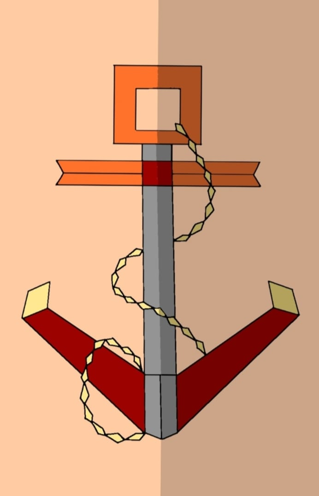

We chose Anchor as an artwork for the theme Hope. It is the Christian symbol which is found in the book of Hebrews 6:19, "Which hope we have as an anchor of the soul, both sure and steadfast." This represents strength and security, as the anchor holds a ship in place. Like we should always stood strong and steadfast in God's Holy name when facing challenges everyday.